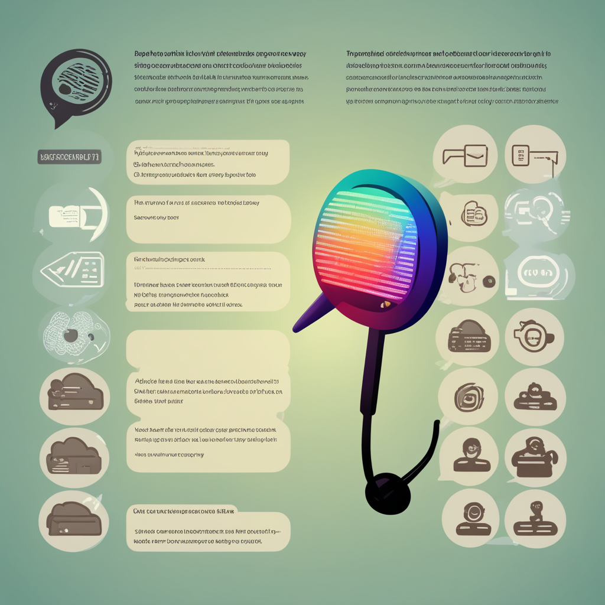

The core innovation for this project lies in optimising existing speech-to-text algorithms to accurately interpret the niche vocabulary and spontaneous dialogues common in academic discourses. By training the models on diverse educational speech data, the transcription-app renders precise automated transcripts tailored to academic subjects and terminology. As teachers give lessons or lead learner discussions, the app listens in and immediately generates corresponding text reports viewable by learners and teachers alike. This relieves manual note-taking burdens while still providing text references of lessons and talking points.
Transcription:
